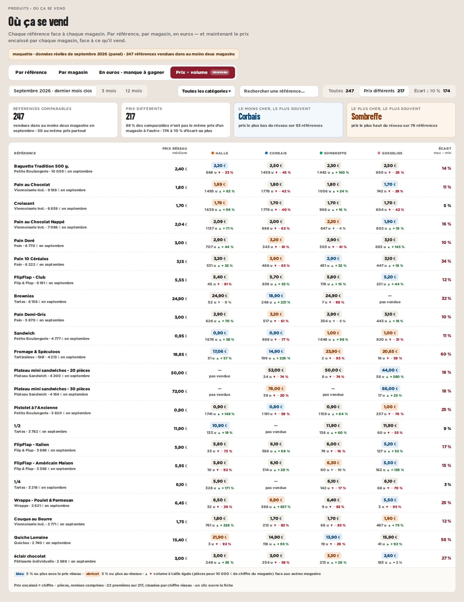

maquette · cockpit › Produits › Où ça se vend › Prix × volume · septembre 2026 · données réelles du panel
A — La grille : chaque référence, chaque magasin
Une ligne par référence, une colonne par magasin : le prix encaissé (bleu sous le réseau, abricot au-dessus) et, dessous, les pièces vendues et le volume à taille égale face aux autres magasins.
Pour
- Tout le réseau d’un coup d’œil, comme « Par référence ».
- Les anomalies sautent aux yeux (une quiche à 21,90 € à Halle, 14,90 € ailleurs).
- Filtre « prix différents » : on ne lit que ce qui diffère.
Contre
- Beaucoup de chiffres par case.
- Le lien prix → volume se lit, mais ne se voit pas.
